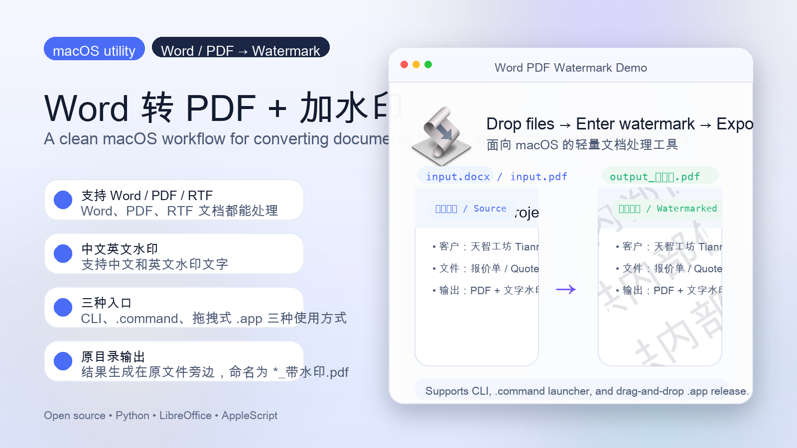
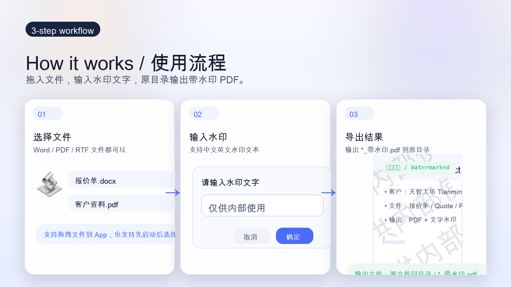
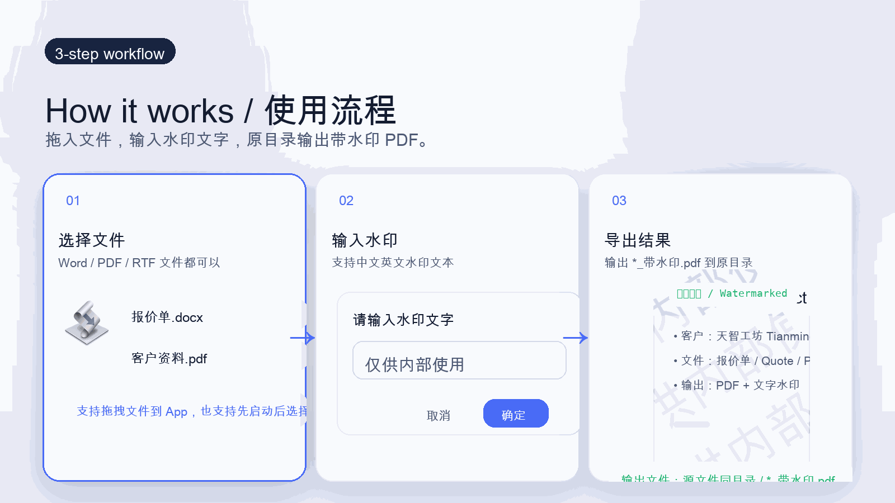
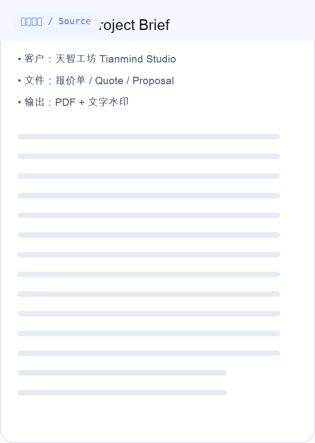
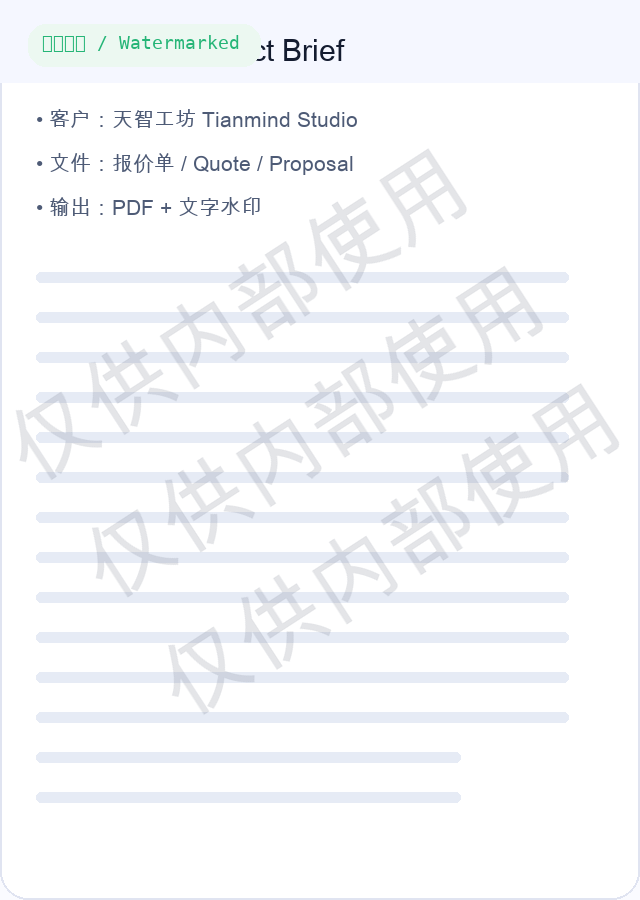

Now live · GitHub Pages
正式官网版落地页、下载页、源码页，现在已经打通
Live site、GitHub repo、Release、CI、README 现在是一套统一对外呈现。对用户是下载入口，对开发者是完整可维护源码，对合作方是可信的项目证明。
Live site、GitHub repo、Release、CI、README 现在是一套统一对外呈现。对用户是下载入口，对开发者是完整可维护源码，对合作方是可信的项目证明。
A polished, open-source macOS workflow for converting Word / PDF files into watermarked PDFs. 支持 CLI、双击 `.command`、拖拽式 `.app`，并且已经带上 GitHub Release 与 macOS CI。

CLI、`.command` 启动器、拖拽式 `.app`，覆盖自动化和日常使用。
保留真正可维护的源码、打包脚本、README、Release 与 CI。
GitHub Actions 会在 macOS runner 上真实验证 smoke test、`.app` 构建和 zip 打包。
当前最新版本为 v1.0.1，支持直接下载 zip 与 SHA256 校验。
不是只把一个编译好的 `.app` 扔上去，而是把源码、发布、说明、校验全部整理成完整项目。
支持 `.doc` `.docx` `.dot` `.dotx` `.rtf` `.pdf`。PDF 直接加水印，Word / RTF 则先经 LibreOffice 转 PDF 再叠加水印。
仓库内置 app 构建脚本、release 打包脚本和 SHA256 输出，方便以后继续演进。
发布用 `.app` 会携带核心脚本、依赖和许可证，减少“别人下载后跑不起来”的概率。
每次 push / pull request 都会在 GitHub Actions 的 macOS runner 上重新验证核心 happy path。
如果你手里已经有 Word、PDF、报价单、合同、提案、样稿，这个工具是直接接在现有工作流上的，不要求你改习惯。
给对内 PDF 统一打上“仅供内部使用”“审阅版”“样稿”等文字水印，降低转发失控的风险。
先在熟悉的 Word 里编辑，再一键转成带水印 PDF，对外发送时更像正式交付物。
支持多文件一次处理，适合每周固定导出一批资料、给多个附件统一加水印的场景。
它本身也是一个案例：如何把本地脚本整理成有 README、Release、License、CI、Pages 的正式仓库。
不管你是从命令行调用，还是把文件拖到 App 上，核心流程都保持一致。

仓库首页已经带上演示 GIF、流程图和产品化说明，不再是只有几行脚本的“半成品感”。



如果你只是想直接用，下载 Release 即可；如果你想自己改，也有源码和构建脚本。
适合最终用户。解压 zip 后得到 Word转PDF加水印.app，双击打开或直接拖文件进去。
适合本地开发、脚本集成或继续扩展功能。
适合二次分发、继续做 macOS 小工具封装，或者重新打 release。
这个项目现在同时具备“外部用户可直接下载使用”和“内部可继续维护演进”两种价值。
Release `.app` 已自带 Python 依赖，但目标机器仍然建议具备标准运行环境。
把这些问题先解释清楚，落地页就更像正式产品页，而不是“源码仓库的附属说明”。
只有在输入是 Word / RTF 时才需要。纯 PDF 加水印不依赖 LibreOffice。
可以。它已经自带核心脚本和 Python 依赖；目标机器仍需要具备 python3，这样打包后的启动器才能正常运行。
默认生成在原文件旁边，命名为 *_带水印.pdf，不强行改你的文件组织方式。
可以。仓库里保留了源码、构建脚本、Release、MIT License 和 CI，后续继续做成更完整的 macOS 工具也顺手。